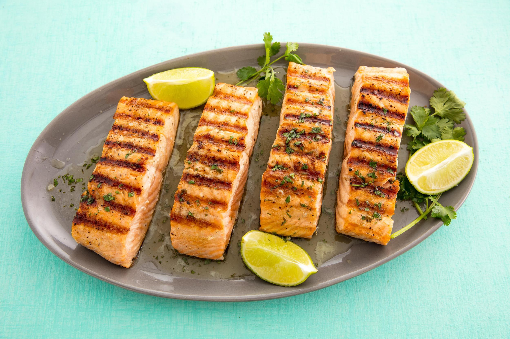

Simple grilled salmon
When we have a beautiful piece of fish, the best way to prepare it is to reduce
any complicated steps and make sure the flavor of the fish comes out. This is a quick,
easy, and healthy meal to prepare and it goes well with other types of food.
Ingredients
- 1 1/2 pounds salmon fillets
- lemon pepper to taste
- garlic powder to taste
- salt to taste
- 1/3 cup soy sauce
- 1/3 cup brown sugar
- 1/3 cup water
- 1/4 cup vegetable oil
Instructions
- Season salmon fillets with lemon pepper, garlic powder, and salt
- In a small bowl, stir together soy sauce, brown sugar, water, and vegetable oil until
sugar is dissolved. Place fish in a large resealable plastic bag with the soy sauce mixture,
seal, and turn to coat. Refrigerate for at least 2 hours
- Preheat grill for medium heat
- Lightly oil grill grate. Place salmon on the preheated grill, and discard marinade. Cook salmon for 6 to 8 minutes per side,
or until the fish flakes easily with a fork
- Serve and enjoy